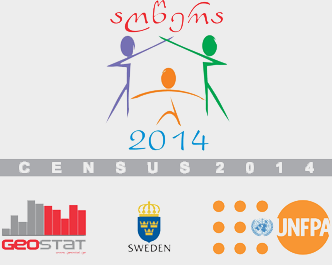
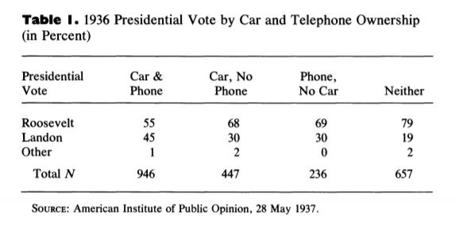
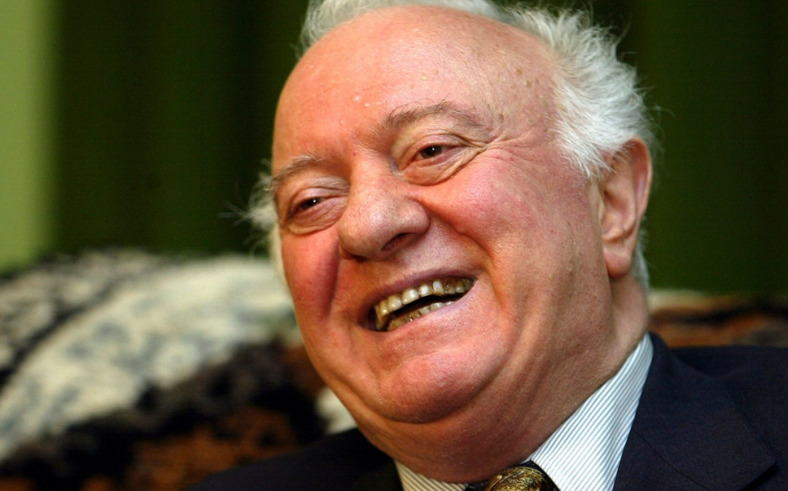
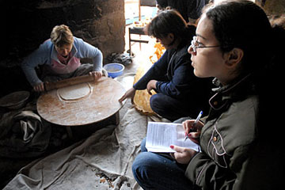
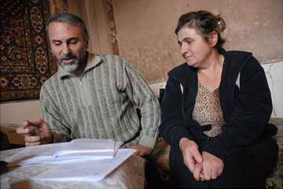
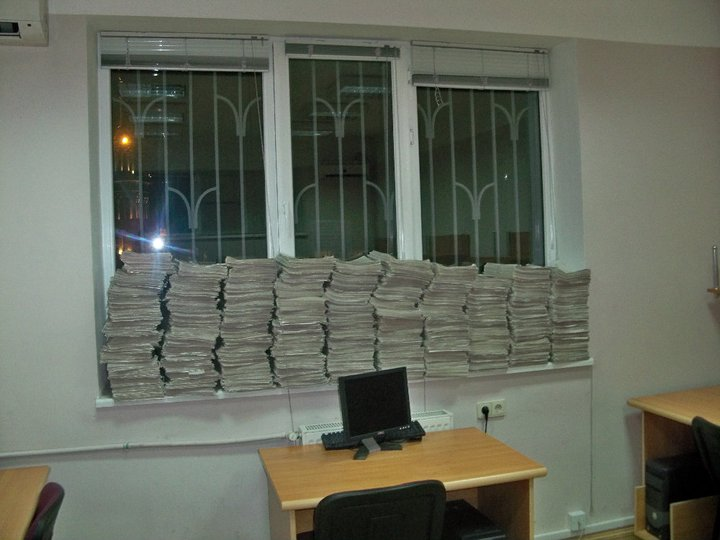
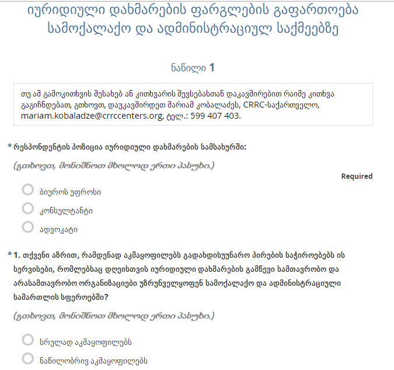
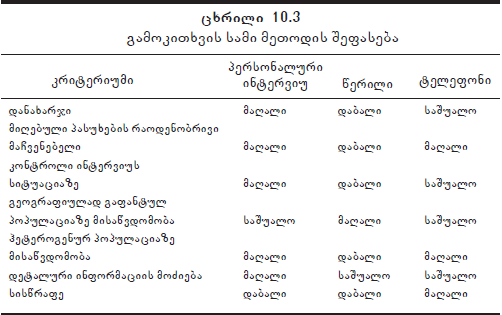

author: დავით სიჭინავა date: 30 აპრილი, 2020 წ. autosize: true transition: none css: css/style.css font-family: 'BPG_upper' მეცხრე შეხვედრა
ადამიანების მასობრივი ფორმით ანკეტირება სტრუქტურირებული კითხვარის მეშვეობით, რათა წარმოდგენა შევიქმნათ ამა თუ იმ სოციალური ფენომენის გავრცელების და მისი თავისებურებების შესახებ
თქვენი აზრით, რა შეიძლება ჩაითვალოს ყველაზე მასშტაბურ მასობრივ გამოკითხვად?



იმავ საღამოს ანკეტა გადავათვალიერე, ყოველი შეკითხვა გასაგები, მარტივი და ამასთანავე საინტერესო იყო - მე მიყვარს ჩემი დარგი. უფრო სწორად, მომწონს - შეკითხვების დასმა უცნობი ადამიანებისათვის, ახალი გუნება-განწყობანი, ხანდახან ფარული ჰუმორი, მაგრამ, რაც მთავარია, ენერგია, ენერგია, მიზანდასახულობა, ყველაფერია ერთად.
დოჩანაშვილი, 1973 წ.





